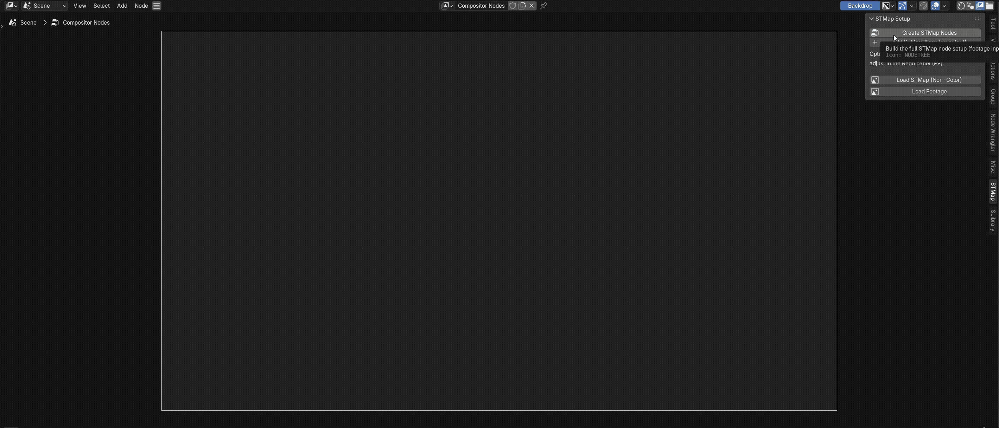

Blender add-on
STMap Setup Node
Instantly apply STMaps in Blender's Compositor with a single click — no more manually linking Separate, Combine, and Map UV nodes by hand.

Features
Adds a dedicated panel to the Compositor's N-panel (Sidebar), so you never have to build an STMap node chain by hand again:
- Create STMap Nodes — builds the full setup: the STMap decode chain, a footage input, and either a Composite node (4.x) or Group Output (5.x) plus a Viewer, in one click. Asks first if it would clear an existing node tree.
- Add STMap Warp (no output) — inserts just the STMap decode chain and a Map UV node at your 2D cursor, leaving its image input and output open so it drops safely into an existing tree without disturbing anything.
- Load STMap (Non-Color) — opens a file browser, forces the chosen image's colorspace to Non-Color, and assigns it straight into the STMap node.
- Load Footage — opens a file browser and assigns the chosen plate into the footage node, leaving its colorspace untouched.
- Live Non-Color check — the panel watches every STMap chain and shows a one-click "Fix It" / "Fix All" button the moment an image's colorspace isn't Non-Color.
V-Flip (green-channel inversion) and interpolation quality are adjustable in the F9 (Redo) panel right after clicking Create STMap Nodes or Add STMap Warp.
Compatibility
- Blender 4.5 and 5.x.
- Fully compatible with the new Blender 5.0 compositor system.
Install
- Download the .py file on the right.
- In Blender, open Edit ▸ Preferences ▸ Add-ons.
- Open the ▾ menu at the top-right, choose "Install from Disk…", then pick the .py file.
- Turn the add-on on with its checkbox. A new "STMap" tab appears in the Compositor's Sidebar (N-panel).
STMap Setup Node
Blender add-on
Version1.1.0
Blender4.5 / 5.x
OSWin / macOS / Linux
Free and open. Everything runs locally in Blender — nothing is uploaded.